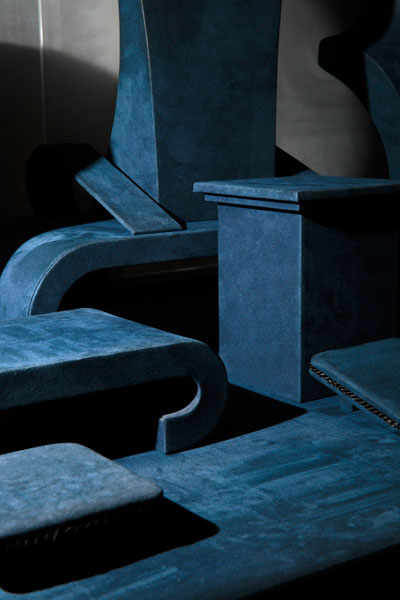

past exhibition |
|||
KiddingNew photographs by Daniel Terna On view: June 1 – July 12 For information, please contact: The Wild Project presents Kidding, a solo exhibition featuring new work by Daniel Terna. Transforming everyday snapshots into the drama of the quotidian, Terna’s photographs—shot in New York, Los Angeles, and Switzerland—capture the showmanship in our daily lives. With an unfixed narrative, Terna homes in on ambiguous scenery and the pose, drawing out the artifice in seemingly natural situations. Moving fluidly across photographic genres, the artist combines staged studio work with personal documentary photographs, a mechanism that acts as another form of visual deception. - Kkory Trolio |
 |
||
|
Daniel Terna (Brooklyn, NY) works primarily in photography and video. His work questions when and why we choose to make pictures, and examines the relationship we have had with picture-making in the past and what it is today. Terna’s work has been exhibited in New York City at 321 Gallery, UnionDocs, Outpost Artist Resources, NurtureArt Gallery, the AC Institute, the Austrian Cultural Forum, Eyebeam, and the Museum of the City of New York. He has also screened at the Contemporary Arts Center (New Orleans), Carpenter Center for the Visual Arts (Cambridge, MA), Armory Center for the Arts (Pasadena, CA), and Gallery Tayuta (Tokyo). Terna graduated with a BA in photography from Bard College and is an MFA candidate at the International Center of Photography. |
|||
exhibition archive |
|||
| 2016 | 2015 | 2014 | 2013 |
| 2011 | 2010 | 2009 | 2008 |